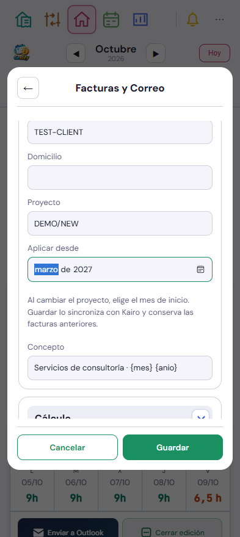
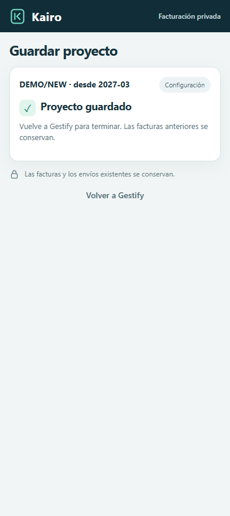
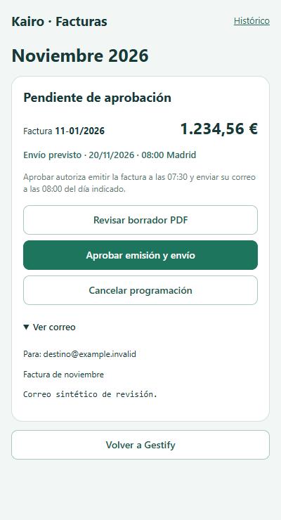

Interfaz real con datos ficticios. Se añaden únicamente estos tres ejemplos de la configuración y revisión afectadas. Las capturas ya revisadas del atlas se conservan.
Un cambio desde Gestify
Proyecto + Aplicar desde. Guardar solicita el cambio en Kairo, sin editar las facturas existentes.

Kairo confirma la configuración y Gestify conserva las vigencias. Si se pierde la respuesta, queda pendiente de confirmar y se puede reintentar.

El mensaje exacto del correo
Ver correo contiene destinatarios, asunto y mensaje. El desglose económico queda en el PDF; nunca se añadía al cuerpo del correo.

Estos ejemplos no aprueban, emiten ni envían facturas.